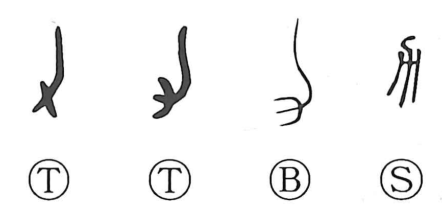

力

Kun: chikara | On: ryoku, riki
power ・ strength ・ force
Explanation
This character is a pictograph of a suki, a plow. In the oldest forms it sketches the tool’s shape, and in 耒 “plow” it is paired with 又, the hand, to show a hand gripping the plow. From this base, many graphs related to cultivation developed. Because working the fields with a plow demands great exertion, the graph naturally came to mean physical strength and power.